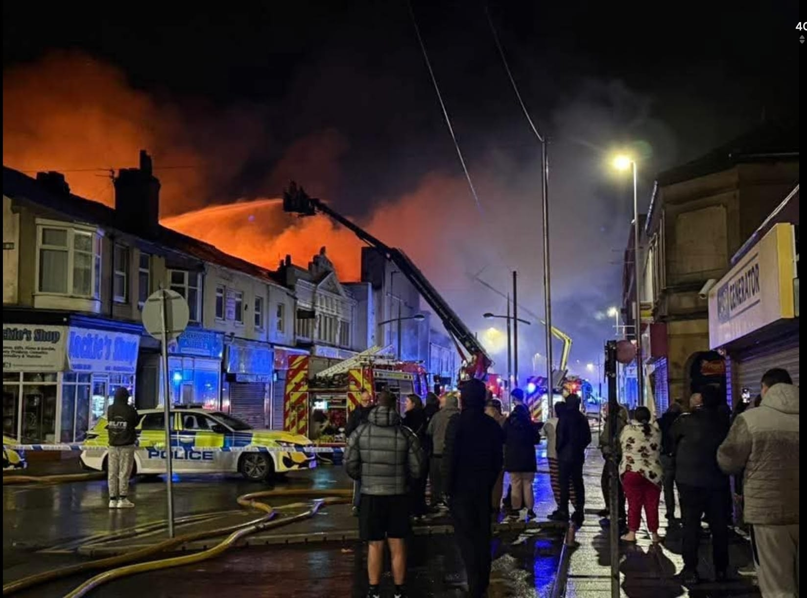
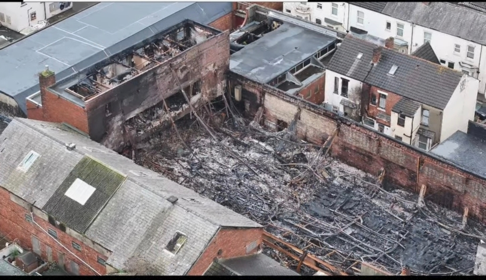
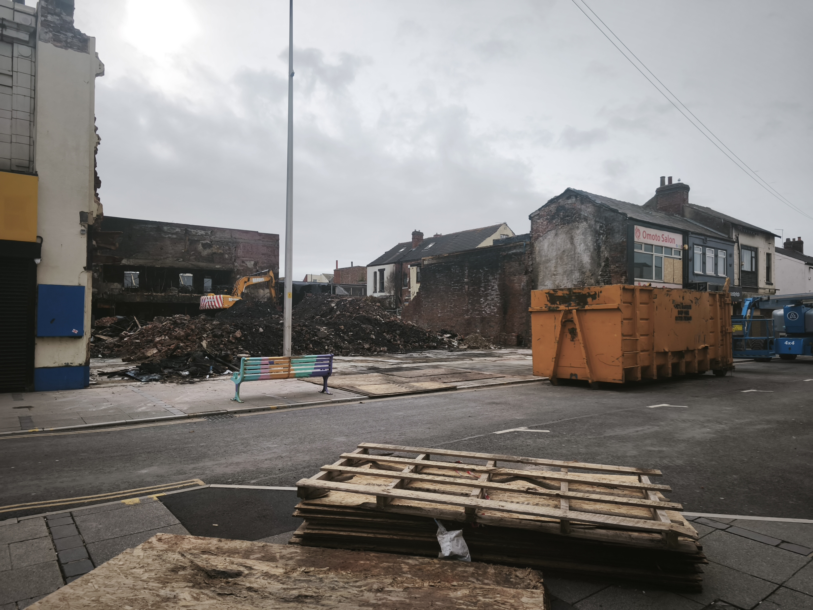
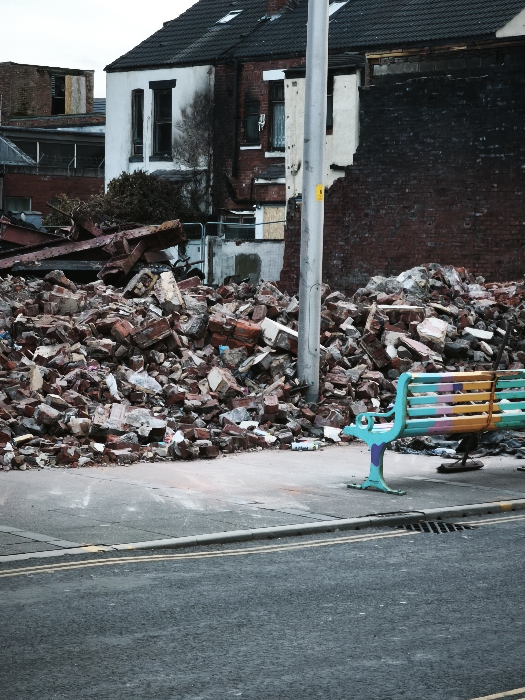

Out of the Ashes

On the night of February 6, 2026, a major fire broke out at a commercial building on Waterloo Road in Blackpool's South Shore. Fifteen fire engines, aerial ladder platforms, and specialist units responded. Firefighters remained on scene for four days.
The blaze destroyed multiple businesses and displaced families from neighbouring Gordon Street. Three weeks on, some residents are still unable to return home. This is a record of what happened — told through the eyes of one resident, the community that rallied around them, and the questions that remain unanswered.

The Fire
What happened on Waterloo Road — the emergency response, the scale of destruction, and the businesses that were devastated.

Niki's Story
A resident's first-hand account of evacuation, displacement, and the long wait to return home.

Left in the Dark
How displaced residents were left without communication, security, or a point of contact for weeks.

Community
The neighbours, volunteers, and fundraisers who stepped in when official support fell short.

Learnings & The Future
What this experience has shown, what should change, and what comes next for Gordon Street.
Sources:
LFRS Incident Log ·
ITV News ·
Central Radio ·
Coastal Radio ·
Chris Webb MP
Last updated: February 27, 2026